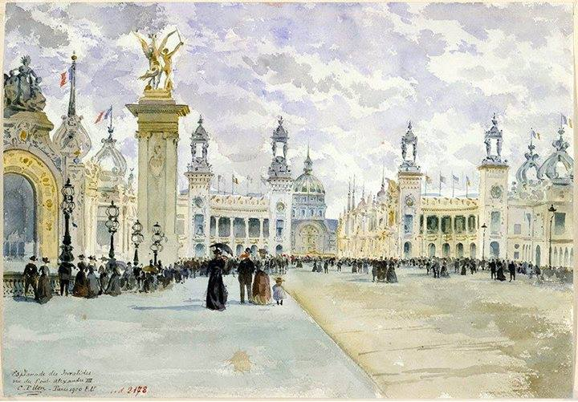
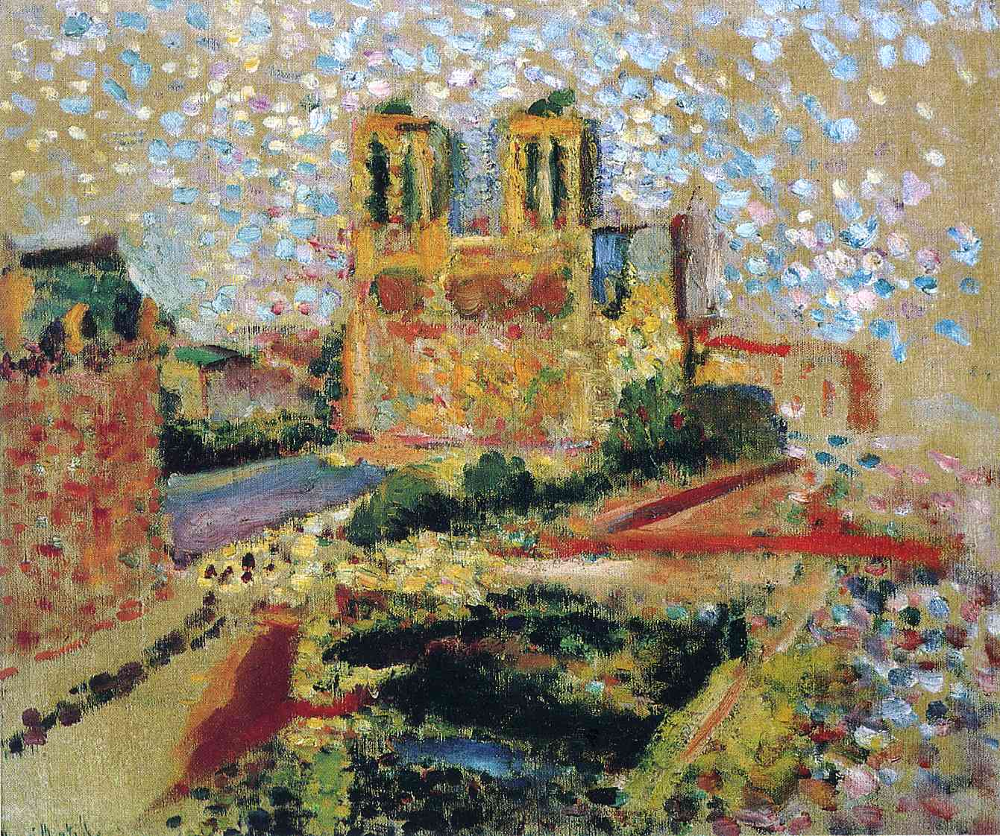

Krajobrazy Rilkego
Paryż
Nieopisana pełnia, która temu miastu, z jego niewyczerpanym bogactwem zjawisk, pozwala tworzyć krajobrazy ducha pod najsłodszym niebem ziemi.
— Rilke w liście do Ellen Delp, 1925

Frank Myers Boggs „L'Opéra de Paris”
Pewnego razu (dosyć wcześnie rano) szedłem sobie w dół bulwarem St. Michel do Biblioteki Narodowej, gdziem zwykł spędzać sporo czasu. Szedłem tak i cieszyło mnie wszystko, co mógł przynieść mi ten poranek, początek nowego dnia, nawet w tym mieście niosący z sobą powiew świeżości, jasności i pogody. Z przyjemnością patrzyłem na czerwień kół u wozów, wilgotną i chłodną, lśniącą niczym na płatkach kwiatów, cieszyło mnie, że gdzieś na końcu ulicy ktoś mignął jasną zielenią — nie wiadomo dlaczego, ale było mi z tym dobrze.
— Rilke w liście do Lou Andreas-Salomé, przeł. W. Markowska
Camille Piton „The Invalides seen from Pont Alexandre III”, 1900
Bulwar St. Michel był pusty i przestronny i łatwo się szło po jego lekkiej pochyłości. Okna otwierały się w górze z brzękiem szklanym, a błysk ich leciał jak biały ptak przez ulicę. Powóz o jasnoczerwonych kołach przejechał, a dalej w dole ktoś niósł coś zielonego. Konie w błyszczącej uprzęży biegły przez ciemno spryskaną, czystą jezdnię. Wiatr był poruszony, nowy, łagodny, a wszystko wznosiło się: zapachy, wołania, dzwony.
— Rilke na kartach Maltego, przeł. W. Hulewicz

Camille Pissarro „The Garden of the Tuileries on a Spring Morning”, 1899
Teraz, w wielkiej ciszy, z dala od świata, Pańska piękna troska o życie porusza mnie jeszcze bardziej niż w Paryżu; tam wszystko brzmi inaczej i przebrzmiewa w nadmiernym hałasie, od którego drżą rzeczy.
Tu, gdzie otacza mnie potęga ziemi, nad którą przechodzą wiatry od mórz, tutaj czuję, że nikt nigdy nie zdoła Panu odpowiedzieć na owe pytania i uczucia wyrastające z głębin życia; bo nawet najlepsi błądzą w słowach, gdy mają one wyrazić coś najcichszego i ledwo wysławialnego.
— Rilke w Listach do młodego poety, przeł. J. Nowotniak
Henri Matisse „Notre Dame”, 1904
Myślę sobie, że Pan jesteś najszczęśliwszym człowiekiem na tej boskiej ziemi… Jesteś Pan wielkim poetą i Pan dobrze o tym wiesz. Jesteś Pan zakochany (nie rezonować, Pan jest i był zawsze zakochany, w kim, kiedy i gdzie, to wszystko jedno). Posiadasz małe atelier w Paryżu — i jest właśnie marzec — cała ta przecudowna wiosna puka do Pańskich drzwi…
— Marie von Thurn und Taxis w liście do Rilkego, przeł. W. Markowska